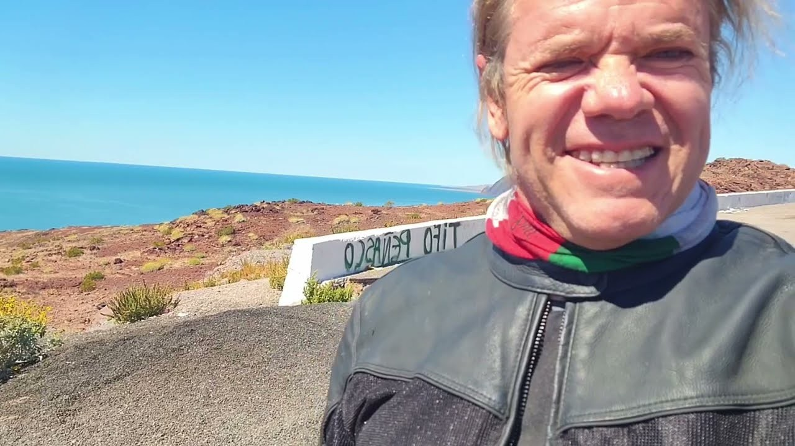
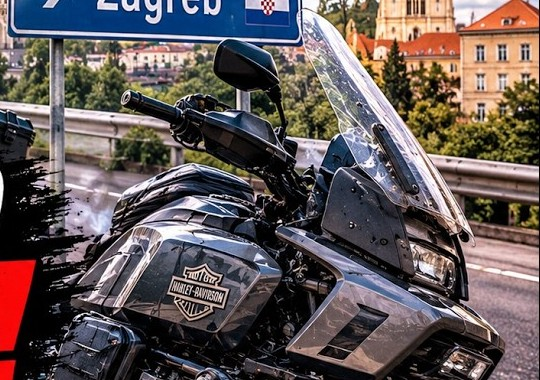
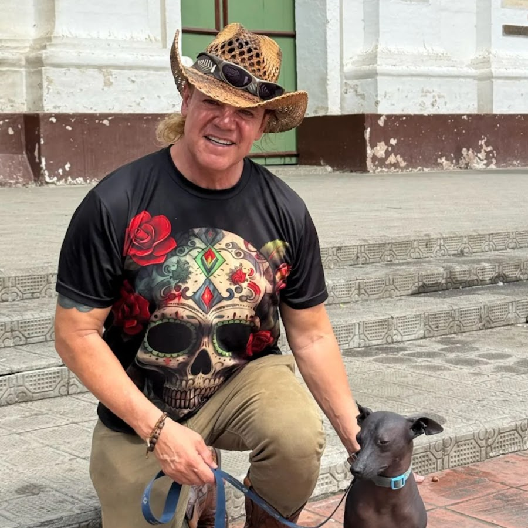

Hoy te llevo a
Recorro el mundo en mi Harley-Davidson Pan America 1250 junto a Elvis, mi amigo real. Aquí no hay guiones ni filtros: solo la carretera, la gente que conocemos y lo que pasa cuando decides seguir.

Un viajero que decidió vivir la carretera como su hogar. Recorre el mundo en moto desde mucho antes de las cámaras, las redes sociales y los mapas digitales. Hoy lo cuenta capítulo a capítulo: sin guiones, sin destinos perfectos y sin filtros.
Durante la pandemia, Juan quedó varado en una playa. Ese momento se volvió el punto de partida de la serie.
La soledad, el silencio y las dudas lo empujaron a decidir su rumbo. El propósito de viajar empezó a pesar más que el miedo.
Los alumbrados de Medellín, el fin de año en Entrerríos, la llegada del motor casa a Cartagena, el Caribe de Punta Arena y el Desfile de los Diablitos.
Compró su Pan America en Huntington Beach y volvió a San Felipe, donde vivió un año y fundó dos inmobiliarias. En Bahía de los Ángeles, frente a una fogata, recordó la noche que cambió su forma de entender los viajes.
La casa natal de Nikola Tesla en Croacia, los Alpes Suizos y la ruta de Budapest a Zagreb. La aventura sigue…
El “amigo real” de esta historia tiene cuatro patas. Elvis acompaña a John en la ruta: cruzó cielos con él rumbo a Cartagena, se tiró a la arena del Caribe y es parte de cada capítulo.
Porque los mejores compañeros de viaje no necesitan mapa: solo necesitan ir contigo.

Toca un punto del mapa para ver el capítulo que se grabó ahí. De Colombia a Baja California y de los Alpes a Croacia.
Cada capítulo es un comienzo, cada ruta una historia. Míralos en orden o salta al lugar que más te llame.

Una audiencia de viajeros y moteros que busca rutas reales, equipo probado y destinos auténticos. Ideal para marcas de motos, equipo, turismo, hospedaje y gastronomía.
HablemosSuscríbete para no perderte ningún capítulo y sigue a John y a Elvis en redes para vivir el viaje en tiempo real.